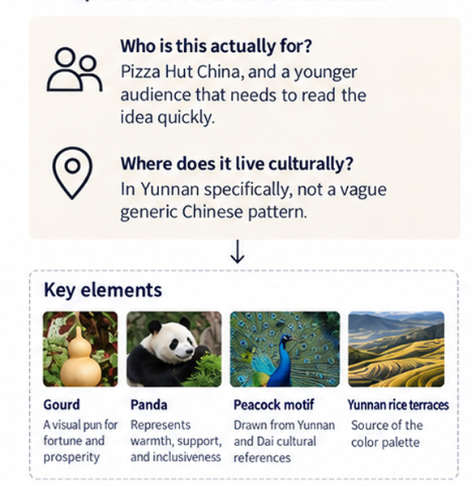
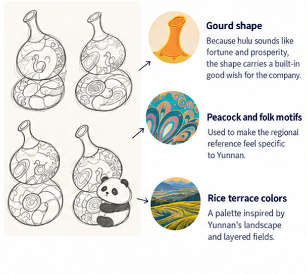
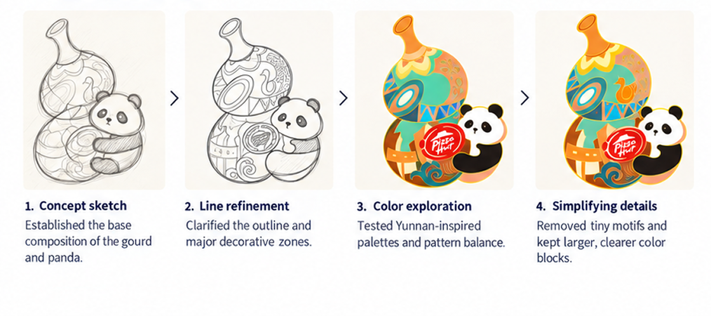
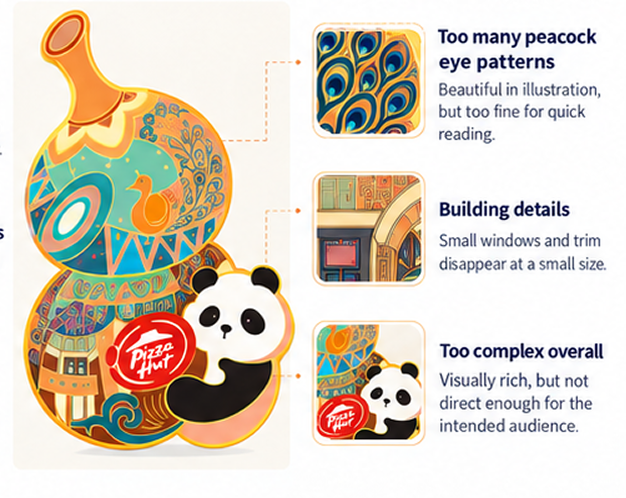
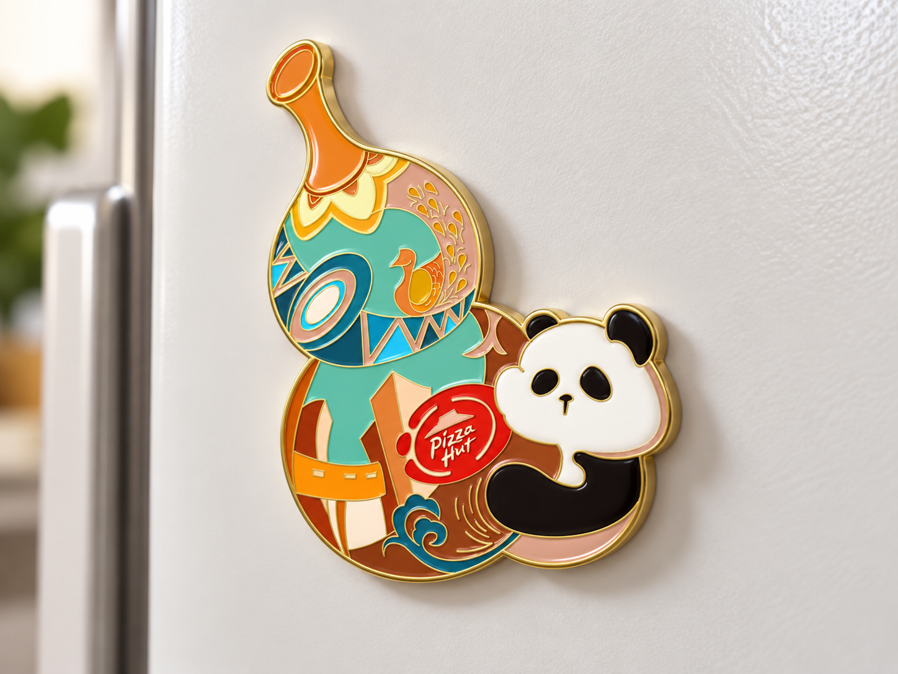

The Badge Nobody's Seen — Yet
A commissioned badge/fridge magnet design for Pizza Hut China, built around a pun, a panda, and a region I wanted to actually get right — Yunnan, not a generic "Chinese-looking" pattern. The real story here is the version I didn't ship: a more detailed first draft I was proud of, that I had to talk myself out of once I remembered who it was actually for.
01 / Discover
Two questions before the first sketch
Before I draw anything, the first questions I ask are always the same: who is this actually for, and where does it live culturally? This piece needed both answers fast — a badge/fridge magnet for Pizza Hut China, made for an internal design selection, needing to read as celebrating a specific region rather than a vague "Chinese-looking" pattern, while being legible to a much younger audience than I usually design for.

02 / Define
A region, a symbol, an audience
A wish built into the shape
I built the shape around a gourd — hulu — because "gourd" and "fortune and prosperity" are a pun on each other in Chinese; the shape is already wishing the company well before anyone's parsed what's on it. A panda hugs the gourd: instantly readable as Chinese, and the hugging pose stands in for how the company treats people internally — helping each other, room for everyone. Gold trim frames it so it reads as auspicious on light or dark backgrounds.
Making Yunnan specific
The color and pattern lean into Yunnan — rice terrace tones, a peacock motif tied to Xishuangbanna and the Dai ethnic group's peacock dance.

03 / Develop
The version I had to let go
The part I actually went back and forth on: the peacock feathers, first pass, had a lot of individual "eye" patterns I was a little proud of, plus window details on a building-like element. It looked good to me as illustration.
But I kept coming back to: would a kid actually see any of that? A five-year-old reacts to color and shape in the first half-second, or not at all.


04 / Deliver
Less detail, a clearer idea
So I talked myself out of the version I personally liked more, in favor of the one that did its job for its actual audience — stripped the peacock eyes, cut the window details, left bigger, more confident color blocks. Felt like a small loss at the time.
What stayed with me
What this one taught me: designing for a specific audience isn't the same as designing what you personally find most impressive. Region and audience aren't decoration added at the end — they're the two questions that should shape a concept from the first sketch.
